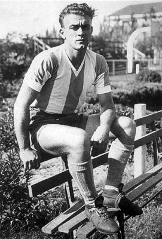

Alfredo Stéfano Di Stéfano Laulhén. 1 (Buenos Aires, 4 de julio de 1926-Madrid, 7 de julio de 2014),4 mejor conocido como Alfredo Di Stéfano, fue un futbolista y entrenador hispano-argentino.n. 2 Jugador legendario de los clubes River Plate, Millonarios y Real Madrid Club de Fútbol,n. 3 desde 2000 hasta su fallecimiento fue presidente de honor del Real Madrid, al que como jugador debe sus mayores éxitos y reconocimientos mundiales y del que llegó a ser su máximo goleador histórico. Es considerado como uno de los mejores jugadores de todos los tiempos.5 Como jugador fue internacional por dos países, circunstancia permitida en la época, contabilizando seis encuentros con la selección argentina y treinta y uno con la selección española tras adoptar su nacionalidad en 1956.6 Pese a ello, se da la circunstancia de que nunca disputó una Copa Mundial —el torneo más prestigioso a nivel de selecciones— por diferentes motivos,7 lo cual no ha sido impedimento para que sea considerado uno de los mejores jugadores de la historia del fútbol y como el primer grande de este deporte.89 Su mayor logro con una selección fue el Campeonato Sudamericano 1947, actual Copa América. Considerado por la FIFA —máximo organismo futbolístico— como uno de los cuatro mejores jugadores de fútbol del siglo xx junto al brasileño Pelé, el argentino Diego Maradona y el neerlandés Johan Cruyff,10n. 4 en 2004 fue elegido el cuarto mejor jugador del siglo xx por la Federación Internacional de Historia y Estadística de Fútbol,11 así como el mejor jugador español del siglo xx.12 Fue también incluido por el mismo organismo entre las 48 leyendas del fútbol,13 además de ser galardonado por la revista France Football como el mejor de todos los ganadores del Balón de Oro hasta 1989, circunstancia por la que recibió el Súper Balón de Oro, siendo el único futbolista de la historia en poseerlo.1415
Al momento de su retirada era el máximo goleador de la historia del Real Madrid C. F. —donde militó once temporadas—, seguido a 65 goles por su excompañero de equipo Ferenc Puskás, siendo ambos integrantes del recordado «Madrid de Di Stéfano» o «Madrid de las cinco Copas de Europa», señalado por la UEFA como uno de los mejores equipos de la historia;16 además, era entonces el jugador nacido en Argentina con más títulos oficiales logrados.17 Su nombre está directamente ligado al del club madrileño,18 ya que —no en vano— su fichaje por el equipo «merengue» cambió el curso de la historia de este equipo hasta ser proclamado como el mejor club del siglo xx, merced sobre todo a las cinco finales consecutivas ganadas de la Copa de Europa que este club consiguió durante su etapa en Madrid, y en las que anotó un total de siete goles siendo el récord histórico de la competición junto al ya mencionado Puskás.19 Asimismo, de Di Stéfano cabe destacar su exquisita calidad técnica y su polivalencia en el campo,20 siendo por ello calificado por parte de entendidos, exfutbolistas y aficionados como el jugador más completo que ha dado el fútbol a nivel mundial.212223